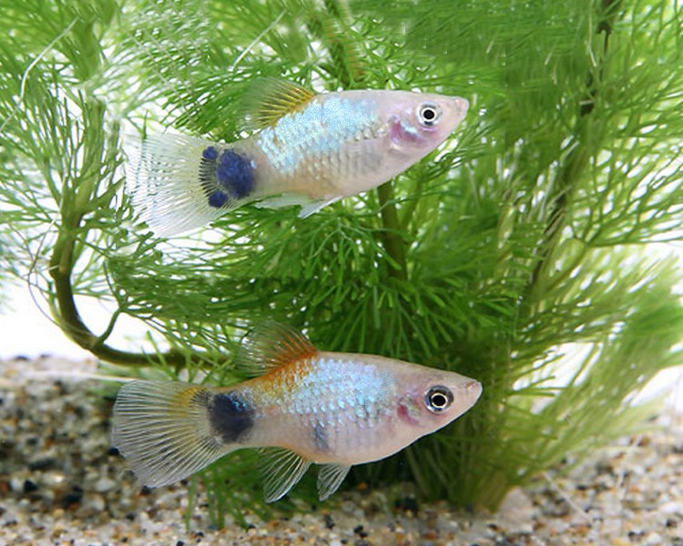
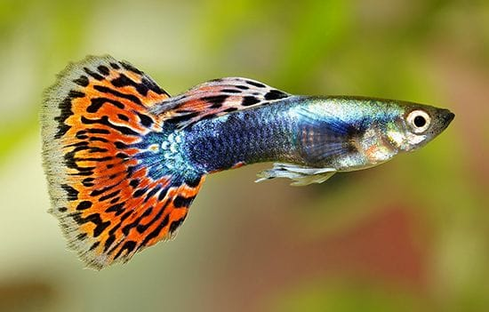
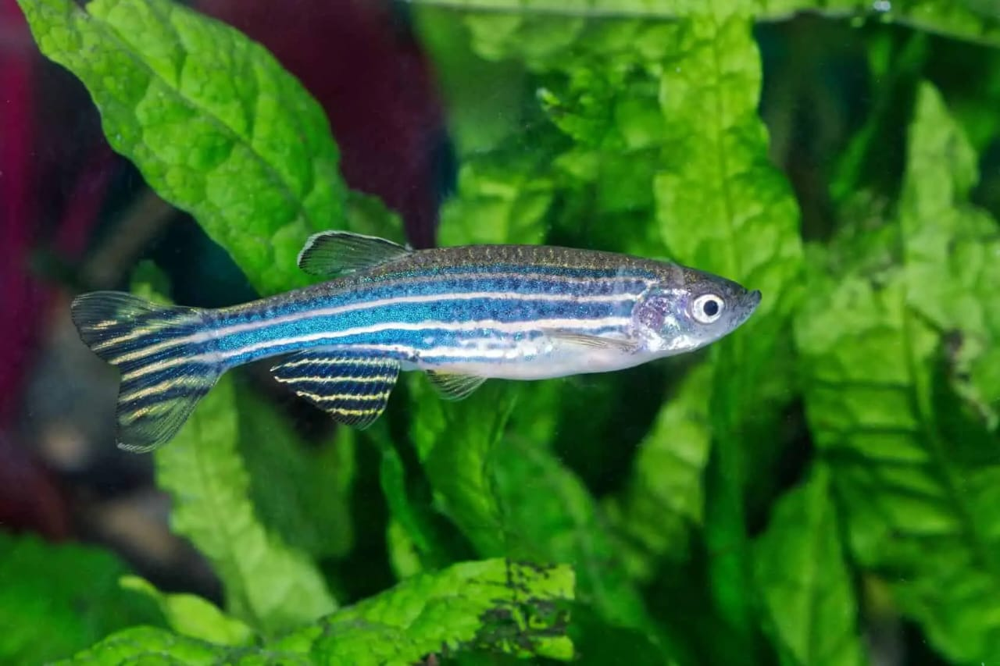
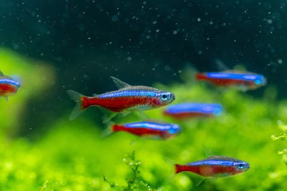
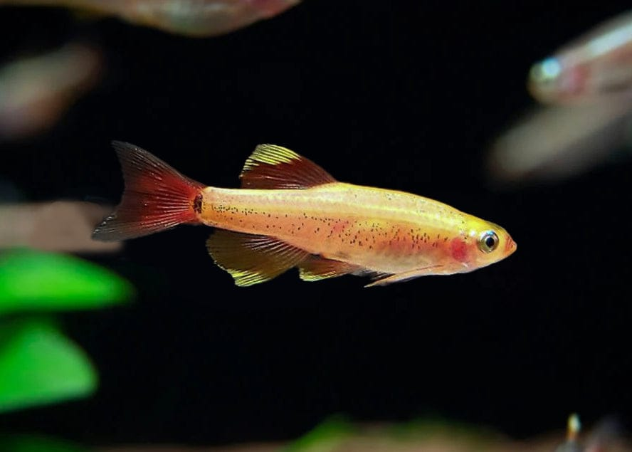
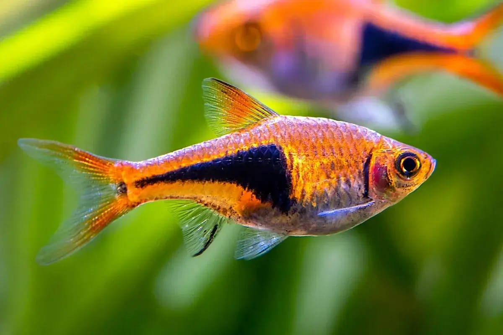

ABOUT FISHES
FISHES AND ITS USES
1.MICKEY MOUSE PLATY

Platys are colorful, live-bearing fish that are very suitable for beginners. Since they are live-bearing fish, many hobbyists start out with only a few fish—which can quickly multiply into many fish. The Mickey Mouse Platy is named for a very specific color pattern formed in the tail peduncle.
2.GUPPIES

Guppies are a cornerstone of the small fish aquarium hobby. Another live-bearing species, guppy tanks are often overrun with offspring from frequent breeding. The best skill any guppy owner can learn is to tell the difference between males and females to keep populations from exploding. The males are smaller and more colorful fish, the larger females can fin merge belly.
3.ZEBRA DANIO(ZEBRA FISH)

These small, striped fish are one of the few in the aquarium hobby that don't require warm tropical temperatures. Zebrafish are peaceful, community players that love schooling in groups of 5 or more fish. There are multiple Danio species available in the pet market with a variety of colors and markings. There is a long fin variety of zebra danio, and it is also available in glow colors that were developed by adding fluorescent genes into the fish.
4.NEON TETRA

One of the most common small freshwater aquarium species is the Neon Tetra. These fish are known for their colorful appearance with bright red and blue stripes. They are great community fish and school together in a vibrant wave.
The Cardinal Tetra is another, very similar species. They are distinguishable from the more common Neon Tetra by their longer red belly bar that extends all the way to the head. The Black Neon Tetra is a similar species with black and gold bars instead of red and blue colors
5.WHITE CLOUD MOUNTAIN MINNOW

The White Cloud Mountain Minnow is another species of small community fish that does not require warm tropical temperatures. These fish do well in temperate tanks with Zebrafish and goldfish, provided they are not snack size. These fish are commonly added to aquascape setups where focus is put on the plants, not necessarily the fish, and just a school of one species of fish is added into the aquarium.
6.HARLEQUIN RASBORA

The Harlequin Rasbora is a small, schooling fish with a vibrant ruby coloration, contrasted with a black marking on the back half of its body, giving it the two-toned 'harlequin' appearance. These peaceful fish add a bright splash of color to planted or aquascaped tanks. There are many species of Rasbora that stay small and do well in community aquariums.
MORE FISHES ARE ALSO AVAILABLE
BACK